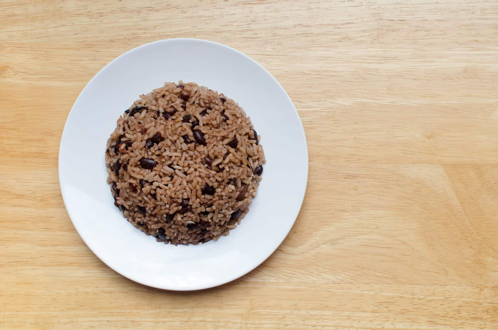

Recipe: Gallo pinto
How to make gallo pinto

Description
Gallo pinto is a traditional Nicaraguan dish, and a very simple one to make. It's simplicity and high versatility make it a great option for either breakfast, lunch or dinner.
The recipe is very easy and quick, where you'll need less than 10 minutes to complete it, and the ingredients can be found very easily in case you don't already have them in your home.
Ingredients
- Cooked white rice
- Baked beans (preferrably black)
- Oil
- Salt (optional)
- Onions (optional)
Steps
- Heat a pan on high heat, and add 3 tbsp of oil. Add onions to taste.
- After 2 or 3 minutes, add the baked beans with a little bit of soup. Stir the beans to make sure they all get coated with oil. Add salt to taste.
- When the soup has dried off, add rice to the pan, and mix with the beans until the color is as homogenous as possible.
Go back Home